记得在2019年的时候，好心艺分别在台北和上海举办了3场CZT-Asia Seminar，还有1场首次举办的zenAgain-Asia，与CZT们共同创造了许多精彩美好的回忆，与此同时我们也许下愿望，期待着与更多的禅绕爱好者有缘相聚。
2020年不断变化的环境给原本的计划带来了不确定性，这同时也带给了我们一个很棒的机会来实践我们的Zentangle哲学，“没有错误”和“界限的优雅”提醒着我们：意外的转折同样可能会带来潜在的美。
透过禅绕Zentangle的练习，我们开始学习拥抱这些不确定性与界限，更专注于当下的一次一笔划，在这个多变的世界中顺应流动着，当时候到了自然而然地便知道下一个笔划该如何去创作。正如同Maria向我们分享的“Stay Afloat”。
Zentangle, Inc.在2020年中，协同好心艺将CZT-Asia Seminar 14 的活动形式进行调整与规划，通过网路科技突破了各种“界线”，首次举办了线上的CZT-Asia Seminar；同时，我们也在上海设置线下活动，让可以出行的CZT们能够有机会亲临感受禅绕所带来轻松且静谧的氛围。
让我们欢迎CZT-Asia Seminar 14 的CZT们加入Zentangle®全球大家庭！
在这次的活动中，总共有220位来自亞洲各地的禅绕爱好者们与我们分别在线上以及线下，共创一段神奇又美好的禅绕时光。
在活动开始前，我们鼓励CZT们将自己最喜欢的禅绕作品与大家分享，共同打造一座禅绕艺术的CZT艺廊。
每一次的CZT-Asia Seminar中，将大家的作品聚集起来排成一幅幅巨大的Mosaic，再也精彩壮观不过了，这次我们也邀请每位CZT将自己的作品上传至Zentangle, Inc.所推出的一款应用程式Zentangle Mosaic App，打造了一幅幅精彩的禅绕Mosaic！
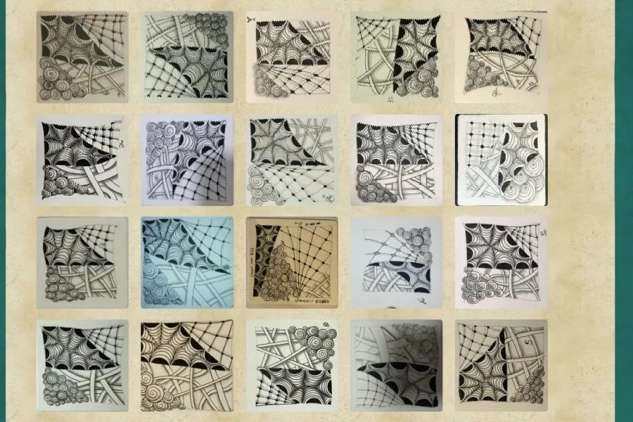 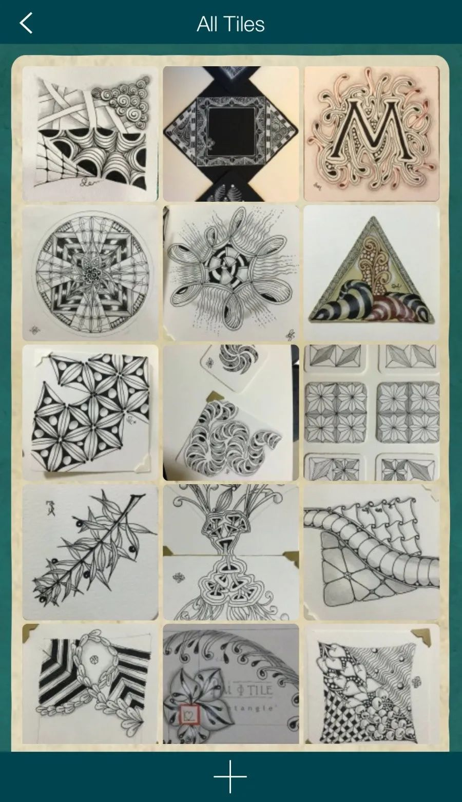
如果你也想欣赏这些CZT美妙的艺术作品，欢迎大家免费下载Zentangle Mosaic App，并使用主题标签（Hashtag）搜寻#CZTAsia14。
过去的CZT-Asia Seminar，禅绕Zentangle的神奇魔法穿梭于现场每位CZT之间，让彼此相互交流与分享。而这次即便是线上活动，我们想或许可以再次“突破暗线”，因此好心艺透过活动后的会晤，使用线上视讯方式与彼此相见，分享自己的禅绕Zentangle故事；同时，我们也从彼此的对谈中，更加的了解CZT们的需求，也获得了很多的启发。
接下来，我们就来和大家分享上海场现场花絮！
Welcome的欢迎牌已经站立到位，教室已经布置齐整，签到台的信封和名牌已经完成列队，CZT-Asia Seminar 14正在迎接着每一位CZT的到来。
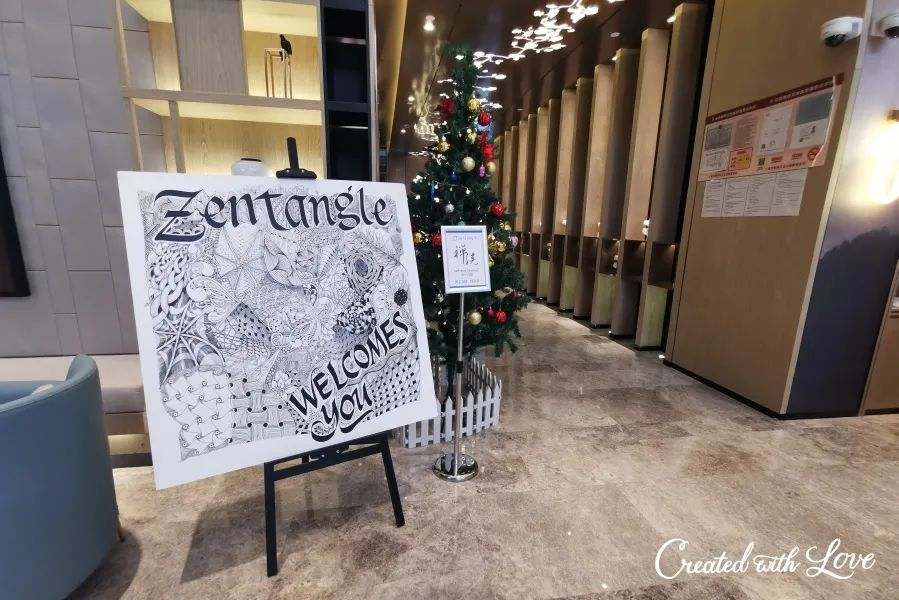
一次一笔划，安下心来，用Zentangle的步调享受当下的创作时光。
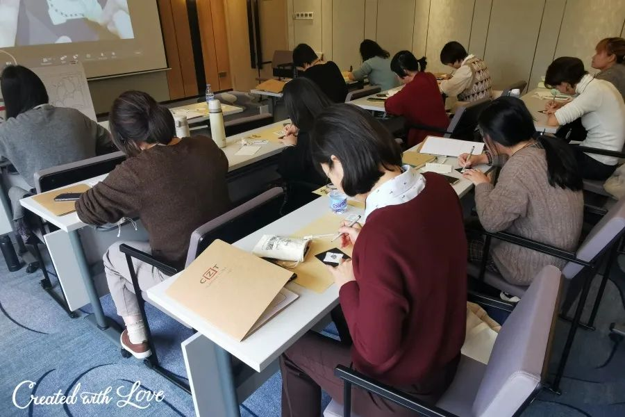
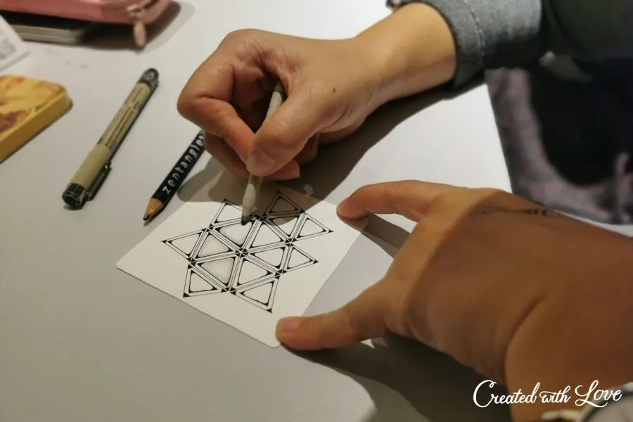
充满了惊喜的连线环节，让CZT们兴奋得不禁站起身离开座位，想要更近距离的和Rick和Maria来Say Hi和对话。
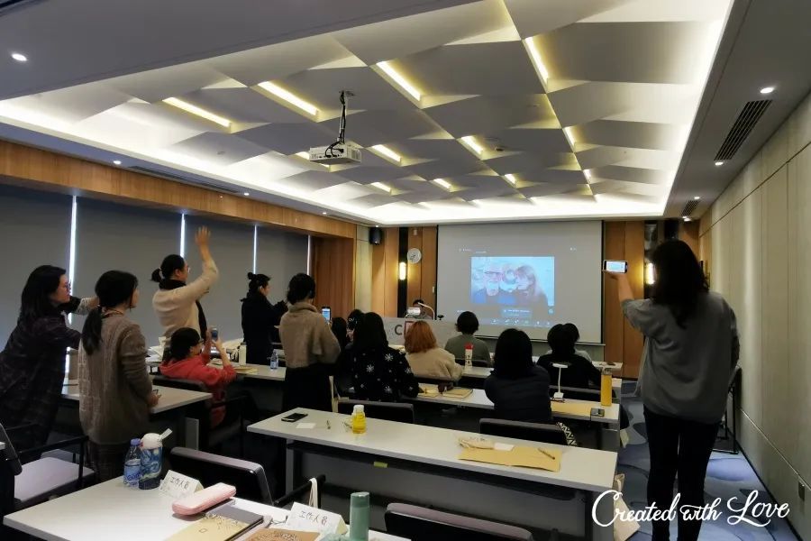
CZT艺廊迎来了CZT们的各种创作，创意的火花彼此激荡，精彩丰呈。
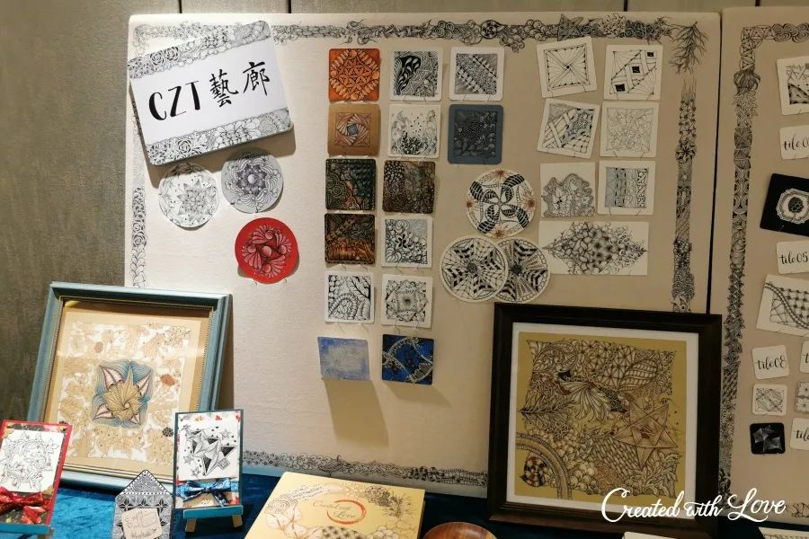
美味的课间茶歇已为CZT们准备好了，各位专注在zentangle创作中的CZT们，还请稍事休息一下，给自己的身体也来补充一些能量。
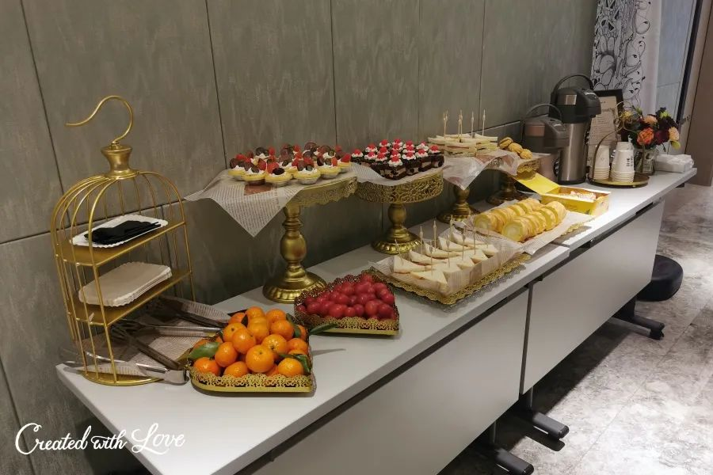
在禅绕Zentangle®中，有一个重要且精彩的环节非Mosaic莫属！当大家的创作在一起就会呈现神奇的魅力来。
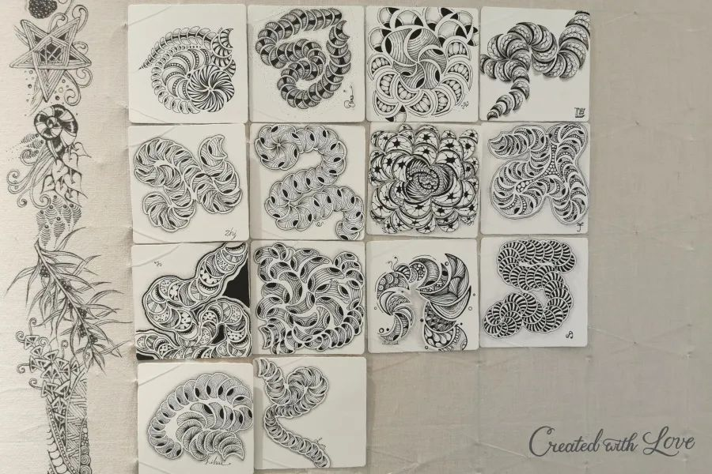
CZT们欣赏着Mosaic作品，对彼此创作的细节相互交流，不时地为彼此的创作送上赞叹和鼓励。
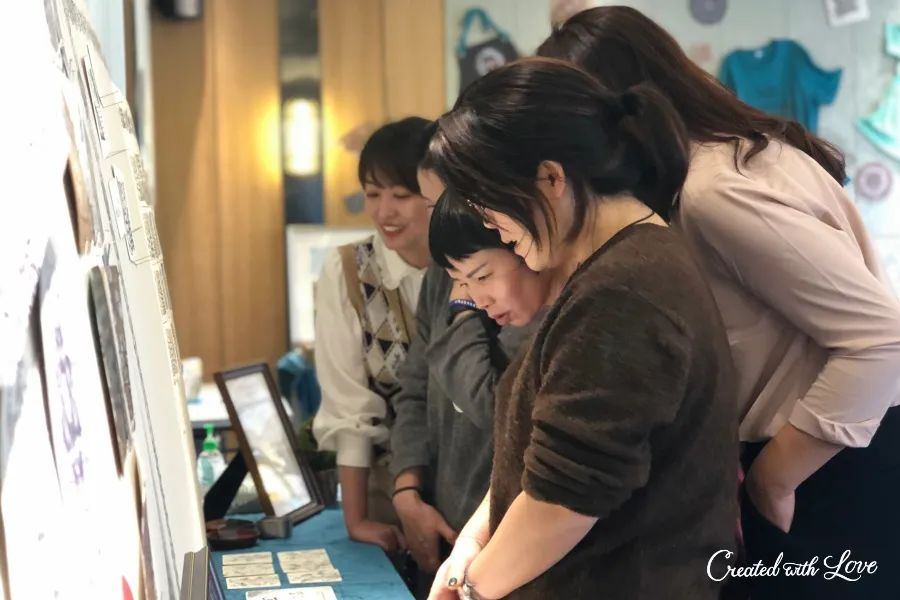
快闪店的各类商品已经整装待发，等待着喜爱ta们的CZT来选选看看。
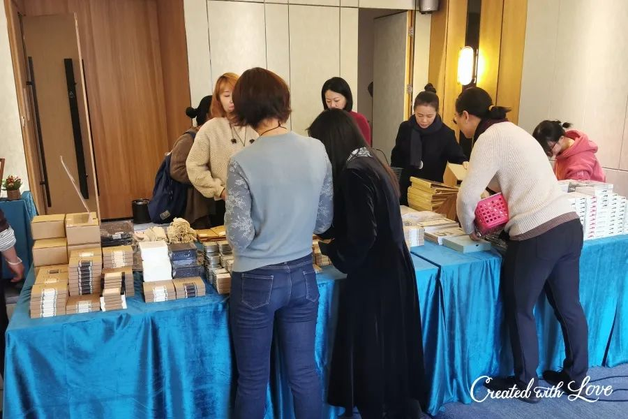
CZT们一起合影留念，希望用照片将这一刻的欢乐记录下来。

在这四天的活动，好心艺透过网路“集结”身处台北、上海两地的教学团队：Sam、Arisa、Barbara、Elaine、Karen、Summer、Shaochi以及木木老师，全程以中文的方式，共同引领大家在轻松愉悦的份围里进入美好的禅绕世界中，共同分享精彩丰富的Zentangle®故事，一起传递禅绕画方法里的哲思，享受禅绕带来的专注与放松。同时好心艺的伙伴也在线陪伴，适时解答CZT们的在线提问，及时提供现场技术支持，为CZT们第一次参与线上CZT-Asia Seminar活动提供技术护航。
我们感谢所有参与CZT-Asia Seminar的CZT们，再次欢迎您们加入Zentangle® 大家庭！
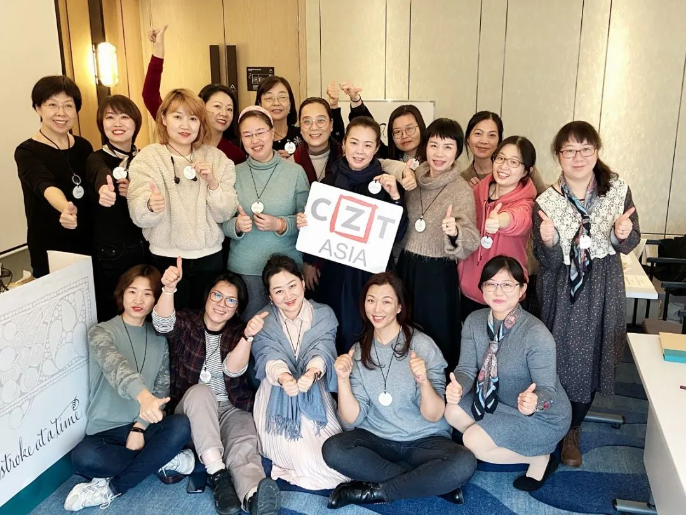